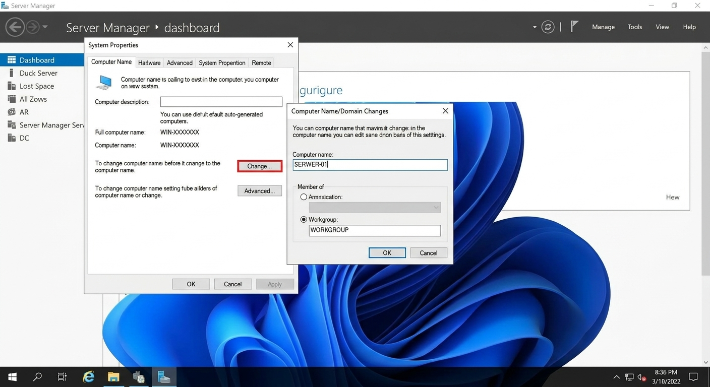
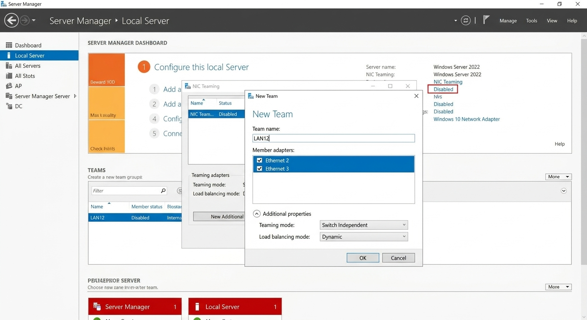
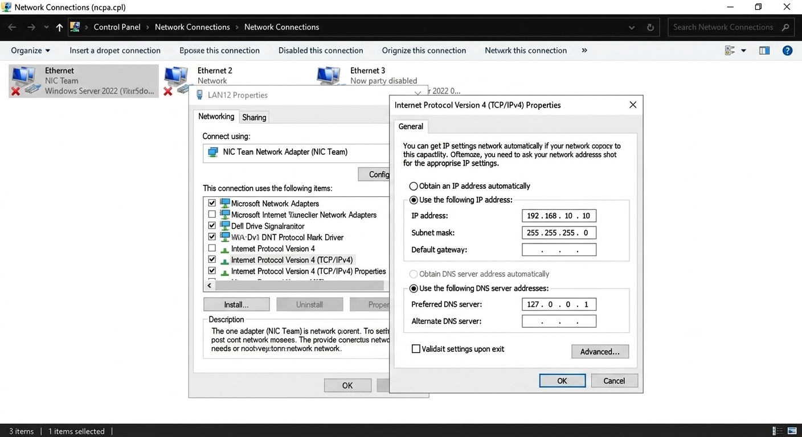
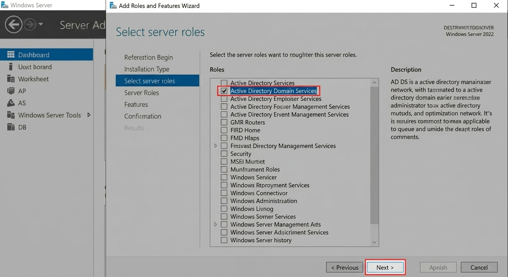
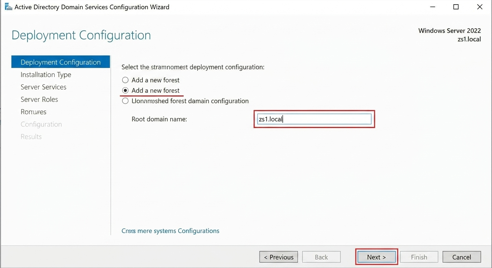
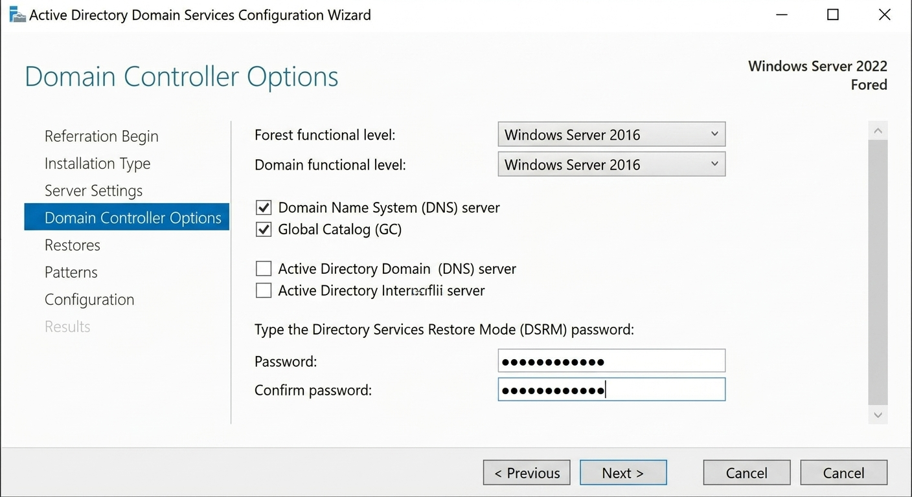

Lab 1: Narodziny Szefa (Kontroler Domeny)
Czas: 60 min-
Krok 0: Wstępna konfiguracja serwera (Kluczowe!)
Zanim zainstalujemy AD, musimy przygotować fundamenty systemu. Zaloguj się jako Administrator.
A. Zmiana nazwy komputera
Zmień losową nazwę serwera (np. WIN-XXXX) naSERWER-01. Wymaga restartu.
B. Konfiguracja NIC Teaming (Zespół kart)
W Menedżerze Serwera (Local Server) kliknij "NIC Teaming". Utwórz nowy zespół o nazwieLAN12, zaznaczając dwie karty podłączone do sieci wewnętrznej. Tryb: Switch Independent / Dynamic.
C. Adresacja IP Zespołu
Wejdź w połączenia sieciowe (ncpa.cpl). Skonfiguruj protokół IPv4 na nowym interfejsie zespołu "LAN12" (nie na pojedynczych kartach!).- IP:
192.168.10.10 - Maska:
255.255.255.0 - DNS:
127.0.0.1(Serwer wskazuje sam na siebie)

- IP:
-
Krok 1: Instalacja roli AD DS
Server Manager (Menedżer serwera) ➔ Add roles and features (Dodaj role i funkcje) ➔ Active Directory Domain Services (Usługi domenowe Active Directory)

-
Krok 2: Promowanie serwera
Po instalacji kliknij żółty trójkąt ostrzegawczy w Menedżerze serwera i wybierz "Promote this server to a domain controller" (Podnieś poziom tego serwera do poziomu kontrolera domeny).
- Wybierz: Add a new forest (Dodaj nowy las).
- Root domain name (Nazwa domeny głównej):
zs1.local -
Ustaw hasło przywracania usług katalogowych (DSRM) na
Zaq12345! -
Ustaw hasło przywracania usług katalogowych (DSRM) na
Zaq12345!


Zobacz oryginalne zadanie z egzaminu
Egzamin: Styczeń 2022 (INF.02-01-22.01-SG)
Arkusz: Pobierz PDF
Zadanie: 7. Skonfiguruj serwer z zainstalowanym systemem Windows: (...)
Treść zadania:
‒ promuj serwer do roli kontrolera domeny. Utwórz nową domenę o nazwie egzamin.local w nowym lesie. Jako hasło konta Administrator dla trybu przywracania usług katalogowych ustaw Egzamin08!@🚨 Najczęstszy błąd uczniów: Próba podłączenia Windowsa 10 do domeny kończy się błędem "Nie można odnaleźć domeny". Dzieje się tak, ponieważ stacja robocza nie wie, gdzie szukać domenyzs1.local.💡 Złota Rada Trenera: Zanim klikniesz "Dołącz do domeny", wejdź w ustawienia karty sieciowej Windows 10 (ncpa.cpl) i w polu Preferowany serwer DNS wpisz adres IP Twojego Windows Servera (192.168.10.10)! Następnie otwórz CMD i wpiszping zs1.local. Jeśli odpowiada – możesz dołączać! -
Krok 3: Podłączenie stacji roboczej (Windows 10)
Uruchom drugą maszynę wirtualną (Windows 10). Upewnij się, że w ustawieniach karty sieciowej ma wpisany adres IP serwera jako swój serwer DNS!
System Properties (Właściwości systemu) ➔ Change settings (Zmień ustawienia) ➔ Domain (Domena): zs1.localPodaj login i hasło Administratora domeny, aby autoryzować podłączenie.
Zobacz oryginalne zadanie z egzaminu
Egzamin: Czerwiec 2025 (INF.02-01-25.06-SG)
Arkusz: Pobierz PDF
Zadanie: 7. Skonfiguruj stację roboczą z zainstalowanym systemem Windows: (...)
Treść zadania:
‒ dodaj stację roboczą do utworzonej domeny
‒ zaloguj się do domeny na konto abackia, a następnie wyloguj się
📸 Weryfikacja Egzaminacyjna (Jak zdobyć punkty?)
Na egzaminie INF.02 nikt nie uwierzy Ci na słowo. Musisz to udowodnić:
- Na stacji roboczej (Windows 10) otwórz okno Właściwości systemu (tam, gdzie widać pełną nazwę komputera i nazwę domeny).
- Zrób zrzut ekranu (PrintScreen lub Narzędzie Wycinanie).
- Otwórz edytor tekstu (Word / LibreOffice Writer), wklej zrzut ekranu.
-
Zapisz plik pod nazwą np.
stacja_testy.docxna pendrive opisanym jako EGZAMIN-X.